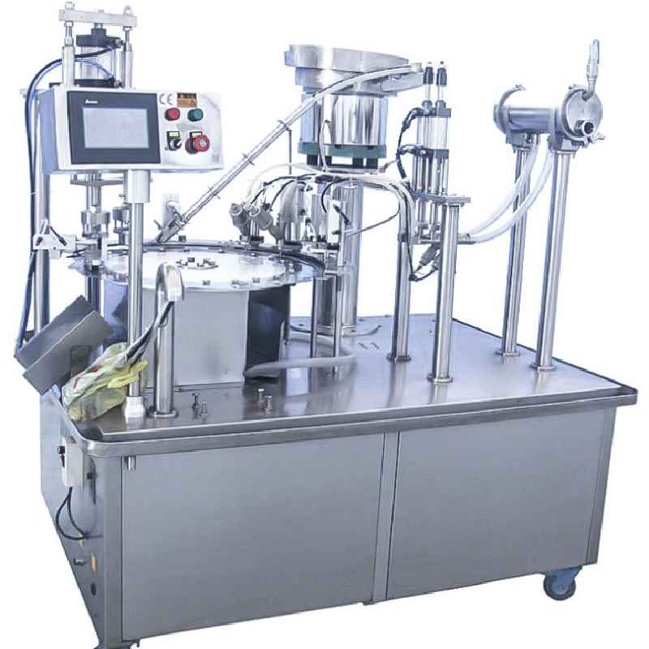

SKU: SAL-M-19
spout pouch packing machine
| Sub-Category | Spices Processing |
| Capacity | 20–60 Pouches/min |
| Material | Stainless Steel |
| Model | SPP-100 |
| Power | 220V / 50Hz |
A spout pouch packing machine is used to fill and seal liquid or semi-liquid products into pouches that have a spout (nozzle) for easy pouring. These pouches are commonly used for products like juice, sauces, baby food, shampoo, and liquid detergents.
The machine ensures leak-proof sealing, accurate filling, and convenient packaging, making it popular in modern packaging industries. Spout pouches are user-friendly, reusable, and help in reducing packaging material compared to rigid containers.
The machine ensures leak-proof sealing, accurate filling, and convenient packaging, making it popular in modern packaging industries. Spout pouches are user-friendly, reusable, and help in reducing packaging material compared to rigid containers.
Rate this product:
Click a star to submit your review